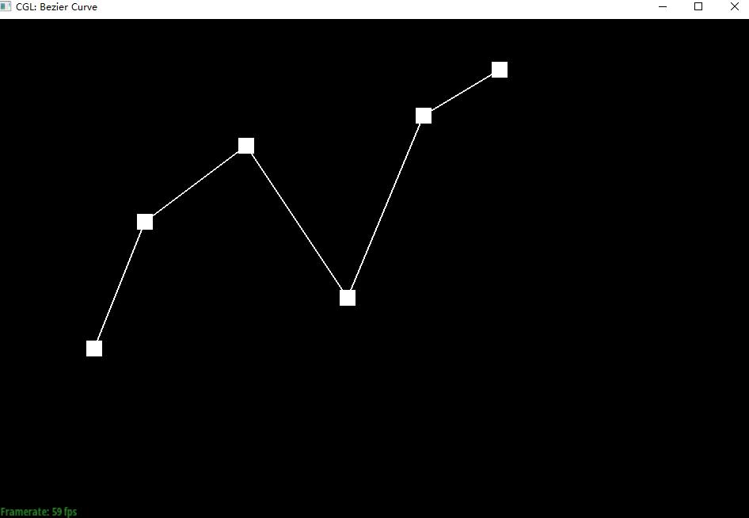
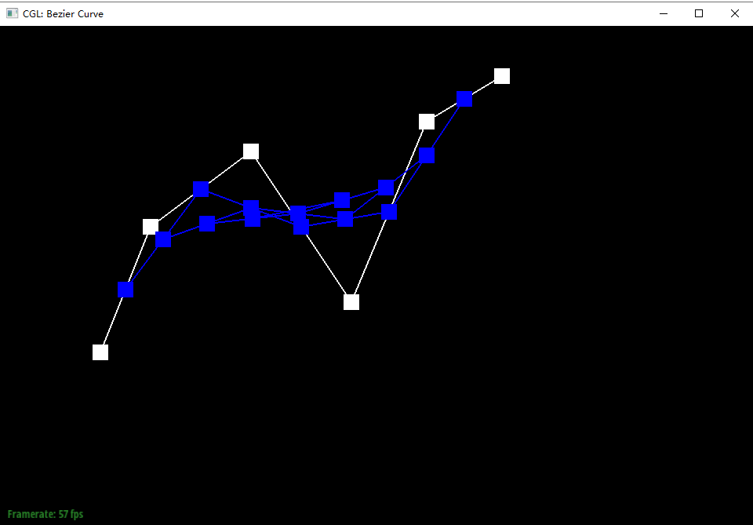
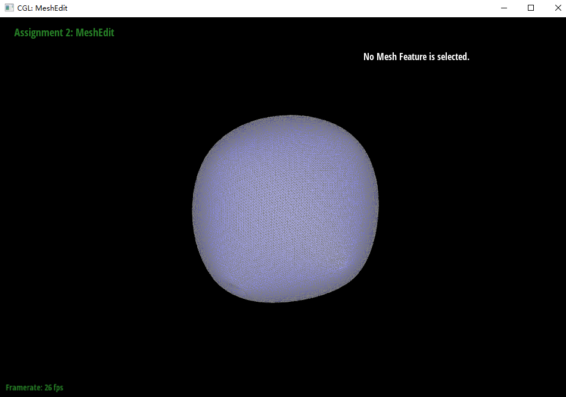

In this project, I implemented the algorithm to build Bezier curves and surfaces using de Casteljau algorithm, including Bezier Curves with 1D de Casteljau Subdivision algorithm, Bezier Surfaces with Separable 1D de Casteljau Subdivision algorithm. I also implemented how to manipulate triangle meshes represented by half-edge data structure, including area-weighted normal vectors at vertices, Edge Flip operator algorithm and Edge Split operator algorithm. At last, I also implemented Loop Subdivision for Mesh Upsampling. During the time I completed the project, one import thing are to keeping the pointer in the vertex, edge, face and half edge point to correct thing in the Edge Flip operator algorithm and Edge Split operator algorithm. The other import thing are not to do Edge Flip operator for the old edge in the Loop Subdivision for Mesh Upsampling. That is: only to do Edge Flip operator for the new edge that connects an old vertex and a new vertex which are inserted during the edge split operator.
In order to implement the Bezier Curves with 1D de Casteljau Subdivision algorithm, I first implemented the lerp function for the Vector2D data structure in the file student_code.cpp, then in the function evaluateStep, for each new point p'(i) (The value of i are in the range of 1 to n-1), p'(i) = lerp(p(i), p(i+1), t).
Following is the screenshot of the effect after I implement the Bezier Curves with 1D de Casteljau Subdivision algorithm:
|

|
|
|
|
|
|

|
|
|
|
|
|
|
|
In order to make the de Casteljau algorithm extends to Bezier surfaces, I first implemented the lerp function for the Vector3D data structure in the file student_code.cpp, then in the Vector3D's version function evaluateStep, for each new point p'(i) (The value of i are in the range of 1 to n-1), p'(i) = lerp(p(i), p(i+1), t). The evaluate1D function call the evaluateStep n - 1 time for n - 1 step level of the evaluation from the original control points down to the final evaluated point, the result one evaluation point are exactly the final evaluated point. the 2D evaluate function first call the evaluate1D function for each row in the two dimension controlPoints along one axis using the value of u as the value of t, get a list of evaluation point. At last call the evaluate1D function to get the final evaluated point from the previous calculated evaluation point list using the value of v as the value of t.
Following is the screenshot of the effect after I implement the Bezier Surfaces with Separable 1D de Casteljau by making the de Casteljau algorithm extends to Bezier surfaces:
|
|
In order to implement the area-weighted normal vectors at vertices algorithm, I first implement the function area to calculate the area of the triangle whose three vertex can be traversalled by the halfedge. Second, I implement the function normal to calculate the normal vector which perpendicular to the triangle face whose three vertex can be traversalled by the halfedge by accumulate the cross product of the three pair of adjacent vertice of the triangle. Finally, in the function normal located at the file student_code.cpp, I traversal all the adjacent triangle face of the vertex and accumulate the (area x normal vector) for each triangle, the uniform of the final accumulate result normal vector is the area-weighted normal vector of the vertex.
Following is the screenshot of the effect after I implement the area-weighted normal vectors at vertices algorithm:
|
|
|
In order to implement the Edge flip algorithm, assume that we flip the edge bc as the following picture:
|
|
in the function flipEdge I make a series of pointer reassignment as below:
Set the next of the half edge ad to dc.
Set the twin of the half edge ad to da.
Set the root vertex of the half edge ad to a.
Set the face of the half edge ad to adc(The face abc before edge flip).
Set the next of the half edge da to ab.
Set the twin of the half edge da to ad.
Set the root vertex of the half edge da to d.
Set the face of the half edge da to dab(The face dcb before edge flip).
Set the half edge of the vertex b to the half edge bd.
Set the half edge of the vertex c to the half edge ca.
Set the next of the half edge ab to bd.
Set the next of the half edge dc to ca.
Set the next of the half edge ca to ad.
Set the next of the half edge bd to da.
Set the half edge of the face adc to the half edge ad.
Set the half edge of the face dab to the half edge da.
Set the face of the half edge dc to adc(The face abc before edge flip).
Set the face of the half edge ab to dab(The face dcb before edge flip).
Following is the screenshot of the effect after I implement the Edge Flip algorithm:
|
|
|
In order to implement the Edge flip algorithm, assume that we split the edge bc as the following picture:
|
|
in the function splitEdge I add new vertex, two new triangle faces, three new edges, six new halfedge and make a series of pointer reassignment as below:
Set the half edge bm to the halfedge bc.
Set the half edge mb to the halfedge cb.
Set the edge bm to the edge bc.
Set the face bma to the face bca.
Set the face dmb to the face cbd.
Add a new vertex m and set it's position to the midpoint of b and c.
Add a new face cma.
Add a new face dmc.
Add a new edge am.
Add a new edge cm.
Add a new edge dm.
Add a new half edge am.
Add a new half edge ma.
Add a new half edge cm.
Add a new half edge mc.
Add a new half edge dm.
Add a new half edge md.
Set the next of the half edge am to the half edge mc.
Set the twin of the half edge am to the half edge ma.
Set the root vertex of the half edge am to the vertex a.
Set the edge of the half edge am to the edge am.
Set the face of the half edge am to the face cma.
Set the next of the half edge ma to the half edge ab.
Set the twin of the half edge ma to the half edge am.
Set the root vertex of the half edge ma to the vertex m.
Set the edge of the half edge ma to the edge am.
Set the face of the half edge ma to the face bma.
Set the next of the half edge bm to the half edge ma.
Set the twin of the half edge bm to the half edge mb.
Set the root vertex of the half edge bm to the vertex b.
Set the edge of the half edge bm to the edge bm.
Set the face of the half edge bm to the face bma.
Set the next of the half edge mb to the half edge bd.
Set the twin of the half edge mb to the half edge bm.
Set the root vertex of the half edge mb to the vertex m.
Set the edge of the half edge mb to the edge bm.
Set the face of the half edge mb to the face dmb.
Set the next of the half edge cm to the half edge md.
Set the twin of the half edge cm to the half edge mc.
Set the root vertex of the half edge cm to the vertex c.
Set the edge of the half edge cm to the edge cm.
Set the face of the half edge cm to the face dmc.
Set the next of the half edge mc to the half edge ca.
Set the twin of the half edge mc to the half edge cm.
Set the root vertex of the half edge mc to the vertex m.
Set the edge of the half edge mc to the edge cm.
Set the face of the half edge mc to the face cma.
Set the next of the half edge dm to the half edge mb.
Set the twin of the half edge dm to the half edge md.
Set the root vertex of the half edge dm to the vertex d.
Set the edge of the half edge dm to the edge dm.
Set the face of the half edge dm to the face dmb.
Set the next of the half edge md to the half edge dc.
Set the twin of the half edge md to the half edge dm.
Set the root vertex of the half edge md to the vertex m.
Set the edge of the half edge md to the edge dm.
Set the face of the half edge md to the face dmc.
Set the half edge of the edge am to the half edge am.
Set the half edge of the edge bm to the half edge bm.
Set the half edge of the edge cm to the half edge cm.
Set the half edge of the edge dm to the half edge dm.
Set the half edge of the vertex m to the half edge mb.
Set the half edge of the face bma to the half edge bm.
Set the half edge of the face dmb to the half edge mb.
Set the half edge of the face cma to the half edge mc.
Set the half edge of the face dmc to the half edge cm.
Set the next of the half edge ca to the half edge am.
Set the next of the half edge ab to the half edge bm.
Set the next of the half edge bd to the half edge dm.
Set the next of the half edge dc to the half edge cm.
Set the face of the half edge ca to the face cma.
Set the face of the half edge ab to the face bma.
Set the face of the half edge bd to the face dmb.
Set the face of the half edge dc to the face dmc.
Set the isNew flag of the edge am to true.
Set the isNew flag of the edge dm to true.
Following is the screenshot of the effect after I implement the Edge Split algorithm:
|
|
|
|
|
|
In order to implement the Loop Subdivision for Mesh Upsampling algorithm, first of all, I define the should_flip function to judge whether an edge connects an old vertex and a new vertex. I also define the calculate_u function to calculate the value of u according to n, the degree of an vertex. I define the compute_original_neighbor_position_sum function to calculate sum of all original positions of the neighboring vertices for a specific vertex. I define the function compute_old_vertex_new_position to calculate the updated position of an old vertex ( (1 - n * u) * original_position + u * original_neighbor_position_sum ) and define the function compute_new_vertex_new_position to calculate the position of a new vertex splitting the shared edge (A,B) between a pair of triangle (A, C, B) and (A, B, D) ( 3/8 * (A + B) + 1/8 * (C + D) ). In the function upsample, I do the following things: 1. Compute new positions for all the vertices in the input mesh, using the Loop subdivision rule, and store them in Vertex::newPosition. At this point, we also want to mark each vertex as being a vertex of the original mesh. 2. Compute the updated vertex positions associated with edges (the updated vertex positions of the midpoint of the edges), and store it in Edge::newPosition. 3. Split every edge in the mesh, in any order. For future reference, we're also going to store some information about which subdivide edges come from splitting an edge in the original mesh, and which edges are new, by setting the flat Edge::isNew. Note that in this loop, we only want to iterate over edges of the original mesh---otherwise, we'll end up splitting edges that we just split (and the loop will never end!). 4. Flip any new edge that connects an old and new vertex. 5. Copy the new vertex positions into final Vertex::position.
Following is the screenshot of the effect after I implement the Loop Subdivision for Mesh Upsampling algorithm:
|
|
|
|
|
|
|
|
|
|

|
If you are not participating in the optional mesh competition, don't worry about this section!